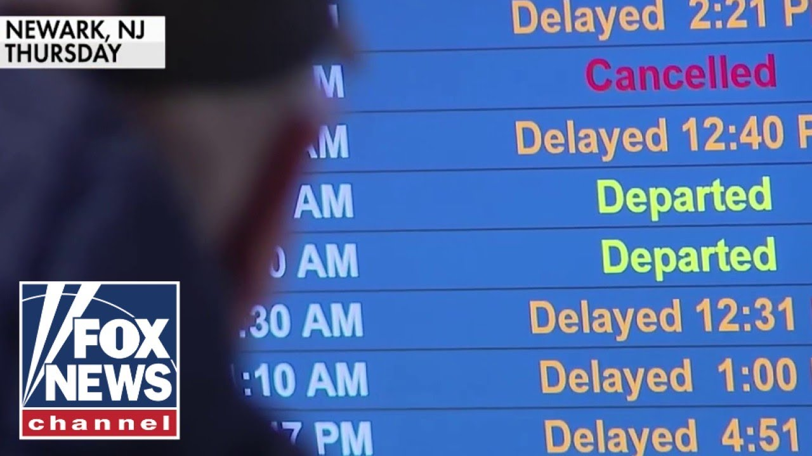

【美国主要机场与飞机和飞行员失去所有通信】
Summary: A radar outage at Newark Airport caused loss of communications between air traffic control and planes, sparking political blame games while highlighting aging FAA infrastructure and staffing shortages due to trauma leave.
摘要： 纽瓦克机场雷达故障导致空中交通管制与飞机通信中断，引发政治指责，同时暴露了FAA设备老化和因创伤休假导致的人员短缺问题。

⏱️ Estimated Reading Time: 9 min
All right, we are learning about a terrifying radar outage at one of the nation's busiest airports.
我们刚刚得知全国最繁忙的机场之一发生了可怕的雷达故障。
Air traffic control at Newark losing all communications with planes and pilots last week and Democrats are making it political.
上周纽瓦克空中交通管制与飞机和飞行员完全失联，民主党人正将其政治化。
We do know that the Trump administration has decimated the FAA in a variety of different ways.
我们确实知道特朗普政府以多种方式削弱了FAA。
The Trump administration is breaking the FAA.
特朗普政府正在破坏FAA。
Last week's delays only made it worse by multiple workers now taking trauma leave of up to 45 days to cope with the stress of equipment failures.
上周的延误使情况恶化，多名工作人员现在因设备故障压力而申请长达45天的创伤休假。
Retired Blackhawk helicopter pilot Lieutenant Colonel Darren Gob joins us now.
退役黑鹰直升机飞行员达伦·戈布中校现在加入我们。
Good morning to you.
早上好。
Okay, good morning.
好的，早上好。
Good morning.
早上好。
So, we've heard that the equipment, according to the National Air Traffic Controllers Association, that it's antiquated.
我们听说，根据国家空中交通管制员协会的说法，这些设备已经过时。
How long will it take to get new equipment and to fix this problem?
更换新设备并解决这个问题需要多长时间？
Well, it's going to take a while.
嗯，这需要一段时间。
Like any major government program, of course, it's there there's funding, there's the supply and the equipment that is necessary, there's testing, all these things can take some time.
像任何重大政府项目一样，当然需要资金、必要的供应和设备，还需要测试，所有这些都需要时间。
And you know, I would unfortunately I would say I would give it a decade to actually get fixed in total across the nation.
不幸的是，我认为要在全国范围内完全解决这个问题可能需要十年时间。
And then that just means we're going to be operating off old equipment for a while.
这意味着我们还将继续使用旧设备一段时间。
And unfortunately also, it seems like this is just going to be one of those things that is going to turn into party politics like everything else does right now with most people not even pointing towards what the actual solutions are that are needed.
不幸的是，这似乎也将成为党派政治的话题，就像现在其他事情一样，大多数人甚至没有指出实际需要的解决方案。
Yeah, you heard Hakeim Jeff blaming Donald Trump.
是的，你听到哈基姆·杰夫指责唐纳德·特朗普。
The transportation secretary, Shawn Duffy, reacts to that and he is actually blaming the last administration, Biden.
交通部长肖恩·达菲对此作出回应，实际上他指责的是上届政府，拜登政府。
Keep in mind, Trump's only been in office for about three months.
请记住，特朗普上任才大约三个月。
Listen to Shawn Duffy.
听听肖恩·达菲怎么说。
So, we have really old infrastructure in America.
美国的基建非常老旧。
It hasn't been updated in the last 30, 40 years.
过去三、四十年都没有更新过。
This should have been dealt with in the last administration.
上届政府本应解决这个问题。
They did nothing.
他们什么都没做。
So, the primary communication line went down.
主通信线路中断了。
The backup line didn't fire.
备用线路没有启动。
And so, for 30 seconds, we lost uh contact with air traffic with air traffic problem.
因此，我们有30秒与空中交通失去了联系。
It it is.
确实如此。
Um now, were planes going to crash?
嗯，飞机会坠毁吗？
No, they have they have uh communication devices.
不，他们有通信设备。
They can see other air traffic like GPS in the airplanes, but it's a sign that we have a frail system in place and it and it has to be fixed.
他们可以通过飞机上的GPS看到其他空中交通，但这表明我们的系统很脆弱，必须修复。
What's your reaction to that?
你对此有何反应？
Well, first of all, it's not just the Biden administration.
首先，这不仅仅是拜登政府的问题。
Of course, it goes back before that when it comes to equipment.
当然，设备问题可以追溯到更早之前。
This and this is not a party issue.
这不是党派问题。
This is a priorities issue when it comes to funding and how you use it.
这是资金使用优先级的问题。
Americans have seen how we've wasted money in lots of different things around the world, but generally don't seem to invest in our own infrastructure in a timely manner.
美国人看到我们在世界各地浪费了很多钱，但似乎没有及时投资我们自己的基础设施。
That's that's my first response.
这是我的第一反应。
The second one is that the biggest problem really when it comes to air traffic controllers, the people themselves really was something that was impacted heavily by the Biden administration under their DEI hiring policies because I know people who are very qualified air traffic controllers who were not hired and they should have been, right?
第二，空中交通管制员最大的问题实际上是人员本身，这很大程度上受到拜登政府DEI招聘政策的影响，因为我认识一些非常合格的空中交通管制员没有被聘用，而他们本应被聘用，对吧？
And you have some of these individuals that walk they they didn't technically walk off the job according to the air traffic controllers association, but they left for trauma reasons.
根据空中交通管制员协会的说法，这些人技术上并没有离职，但他们因创伤原因离开了。
Listen to this.
听听这个。
This is what they released.
这是他们发布的声明。
On Monday, April 28th, air traffic controllers who were responsible for separating and sequencing aircraft in and out of Newark temporarily lost radar in communications with the aircraft.
4月28日星期一，负责纽瓦克机场进出飞机间隔和排序的空中交通管制员暂时失去了与飞机的雷达通信。
Unable to see, hear, or talk to them.
无法看到、听到或与他们通话。
The controllers did not walk off the job.
管制员并没有离职。
As it has been reported, the controllers took absence under the Federal Employees Compensation Act.
据报道，管制员根据《联邦雇员补偿法》休假。
This program covers all federal employees that are physically injured or experience a traumatic event on the job.
该计划涵盖所有在工作中身体受伤或经历创伤事件的联邦雇员。
Look, I know it's very stressful, but can we afford to have a handful of them leave their positions for 45 days when we know that those are the only the the people who work at Newark, they're trained with for that equipment.
听着，我知道压力很大，但我们能承受让少数人离开岗位45天吗？我们知道这些人是在纽瓦克工作的唯一受过该设备培训的人员。
We can't just call up someone that works in DC to come in and work in Newark, right?
我们不能随便叫一个在华盛顿工作的人来纽瓦克工作，对吧？
Yeah.
是的。
We can't have people just walking off the job.
我们不能让人们就这样离职。
And this was not that big of a deal as far as the stress on the individual.
就个人压力而言，这并不是什么大不了的事。
ATC stress is normal.
空中交通管制的压力是正常的。
They know that.
他们知道这一点。
But they're trained for even ATC0 scenarios where they lose systems and and have to operate off of different means.
但他们甚至接受过ATC0场景的培训，即系统丢失并需要通过不同方式操作。
They know this can happen.
他们知道这可能会发生。
They're trained to deal with it when it happens.
他们接受过应对这种情况的培训。
But to be able to to turn around and say that that brief period of time caused so much stress that now they need to take 45 days off and make the problem even worse when the hiring practices and and the number of people in ATC are already stretched so thin.
但能够转身说那短暂的时间造成了如此大的压力，以至于他们现在需要休假45天，使问题更加恶化，而招聘实践和空中交通管制员的数量已经非常紧张。
We just can't afford to do that.
我们负担不起这样做。
We need to hire better people who are capable of handling even that.
我们需要雇用更好的人，他们能够处理这种情况。
you know, limited additional stress over that short period of time, right?
你知道，在那短暂的时间内有限的额外压力，对吧？
I mean, my thoughts are we all have stress in our jobs, but you can't just take a month and a half off.
我的想法是我们工作中都有压力，但你不能就这样休一个半月假。
Thank you so much, Lieutenant Colonel.
非常感谢，中校。
We appreciate it.
我们非常感谢。
I'm Steve Ducey.
我是史蒂夫·杜西。
I'm Brian Kilme.
我是布莱恩·基尔梅。
And I'm Anley Hehart.
我是安利·哈特。
And click here to subscribe to the Fox News YouTube page to catch our hottest interviews and most compelling analysis.
点击此处订阅福克斯新闻YouTube频道，获取我们最热门的采访和最引人入胜的分析。